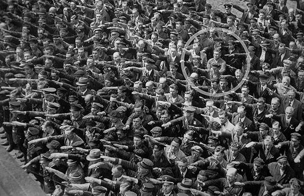
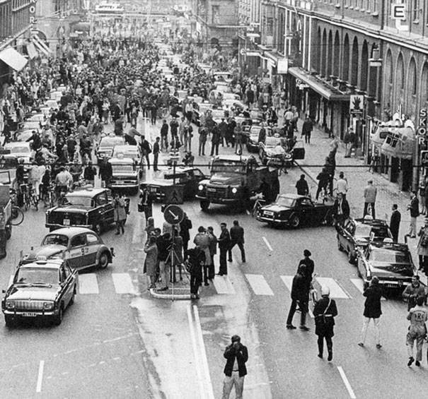
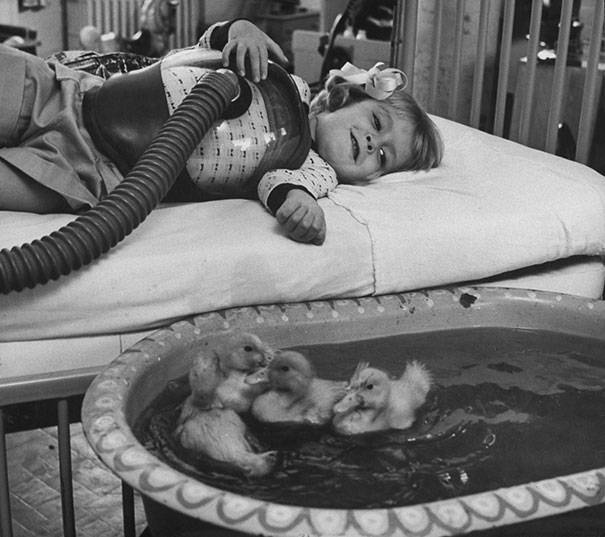
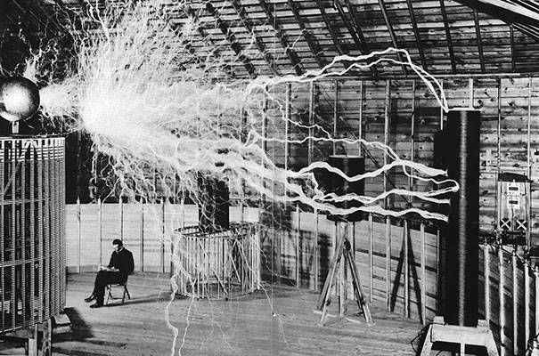
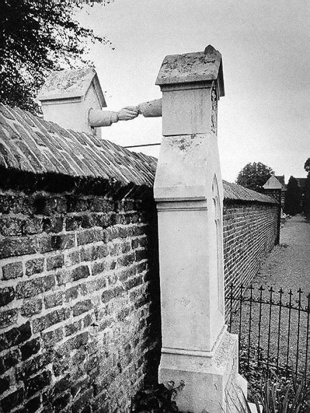

He stood alone, refusing to join the Nazi salute in 1936.

Sweden switched to driving on the right side of the road in 1967. This was the result on the first morning.

Animals used to be involved in medical therapy as early as 1956.

Nikola Tesla sitting in his laboratory with his "Magnifying Transmitter".

A Catholic woman and her protestant husband laid to rest in Holland, 1888.